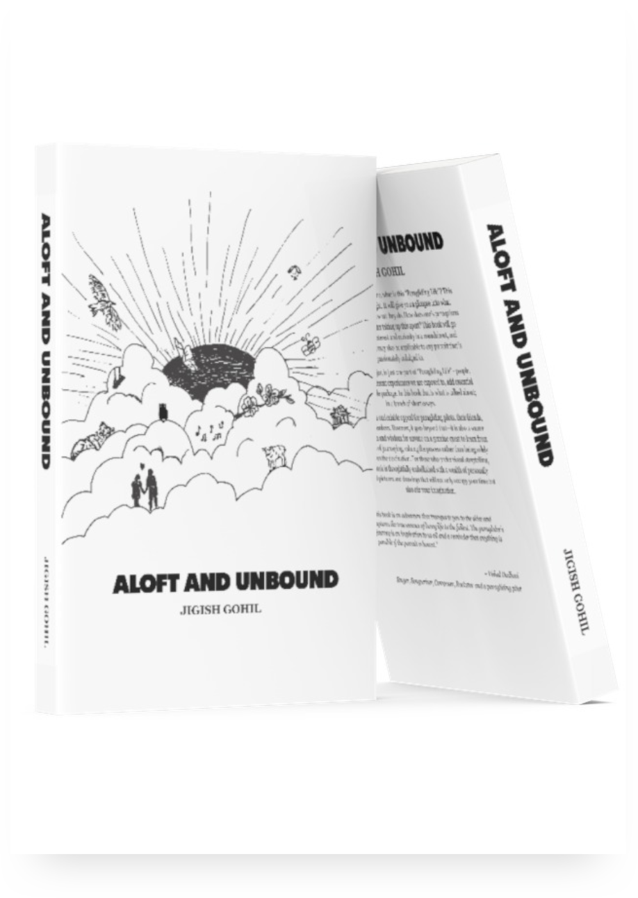

ALOFT AND UNBOUND
ALOFT AND UNBOUND
A book on embracing the journey, valuing the process over the destination.
"I wholeheartedly recommend "Aloft And Unbound" to anyone interested in exploring the wonders of paragliding or simply seeking an enjoyable read. Jigish's passion and authentic voice shine through these pages, and I am confident that you will find inspiration and delight within its covers. ."

Debu Chaudhury
Paragliding Pilot
"This book is different. It is light and quick, yet solid, like the best wings are. It is accessible and understandable like the advice Jigish gives to new pilots who turn to him. Like a good pilot, it both looks back and moves forward, and brings the sky within reach."
Vishal Dadlani
Singer, Songwriter, Composer, Rockstar and a Paragliding Pilot
"Dive into the world of paragliding, experience it's thrills and rub shoulders with a breed of people whose world revolves around flying alone in the sky and yet live a life of deep camaraderie. Get insights into paragliding life and get a close up view of the thrills, enjoyment & pains of a paragliding pilot through the eyes of Jigish, who is into IT by profession and is a free bird at heart. A light read, with philosophical tones and a touch of romanticism."
Ashutosh Chopra
Author, Fighter Jets, Commercial Jets and a Paragliding Pilot
